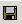

This describes how to save the information in the output window to analyze the running status of the convert management system.
Prerequisites
- The convert management system runs normally.
- The alarm convert parameters are configured.
Procedure
- You can access the Save As dialog box by the following three means:
- Choose .
- Choose .
- Click .
- In the Save As dialog box, enter File name and select the Save type and Save path.
- Click Save.
Copyright © Huawei Technologies Co., Ltd.